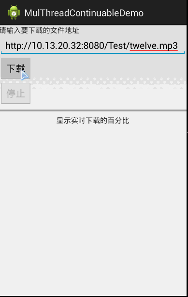

本节引言：
本节给大家带来的Android中的多线程断点续传的代码解析，呵呵，为什么叫解析呢？因为我 也写不出来，( ╯□╰ )！先来说说断点的意思吧！所谓的断点就是：使用数据库记录每天线程所 下载的进度！每次启动时根据线程id查询某线程的下载进度，在继续下载！听上去蛮简单的， 要你写十有八九写不出，这很正常，所以本节看懂最好，看不懂也没什么，会用和改就好！ 好的，开始本节内容~
Android多线程断点下载的代码流程解析：
运行效果图：

实现流程全解析：
Step 1：创建一个用来记录线程下载信息的表
创建数据库表,于是乎我们创建一个数据库的管理器类,继承SQLiteOpenHelper类 重写onCreate()与onUpgrade()方法,我们创建的表字段如下:
DBOpenHelper.java：
package com.jay.example.db;
import android.content.Context;
import android.database.sqlite.SQLiteDatabase;
import android.database.sqlite.SQLiteDatabase.CursorFactory;
import android.database.sqlite.SQLiteOpenHelper;
public class DBOpenHelper extends SQLiteOpenHelper {
public DBOpenHelper(Context context) {
super(context, "downs.db", null, 1);
}
@Override
public void onCreate(SQLiteDatabase db) {
//数据库的结构为:表名:filedownlog 字段:id,downpath:当前下载的资源,
//threadid:下载的线程id，downlength:线程下载的最后位置
db.execSQL("CREATE TABLE IF NOT EXISTS filedownlog " +
"(id integer primary key autoincrement," +
" downpath varchar(100)," +
" threadid INTEGER, downlength INTEGER)");
}
@Override
public void onUpgrade(SQLiteDatabase db, int oldVersion, int newVersion) {
//当版本号发生改变时调用该方法,这里删除数据表,在实际业务中一般是要进行数据备份的
db.execSQL("DROP TABLE IF EXISTS filedownlog");
onCreate(db);
}
}
Step 2：创建一个数据库操作类
我们需要创建什么样的方法呢？
- ①我们需要一个根据URL获得每条线程当前下载长度的方法
- ②接着,当我们的线程新开辟后,我们需要往数据库中插入与该线程相关参数的方法
- ③还要定义一个可以实时更新下载文件长度的方法
- ④我们线程下载完,还需要根据线程id,删除对应记录的方法
FileService.java
package com.jay.example.db;
import java.util.HashMap;
import java.util.Map;
import android.content.Context;
import android.database.Cursor;
import android.database.sqlite.SQLiteDatabase;
/*
* 该类是一个业务bean类,完成数据库的相关操作
* */
public class FileService {
//声明数据库管理器
private DBOpenHelper openHelper;
//在构造方法中根据上下文对象实例化数据库管理器
public FileService(Context context) {
openHelper = new DBOpenHelper(context);
}
/**
* 获得指定URI的每条线程已经下载的文件长度
* @param path
* @return
* */
public Map<Integer, Integer> getData(String path)
{
//获得可读数据库句柄,通常内部实现返回的其实都是可写的数据库句柄
SQLiteDatabase db = openHelper.getReadableDatabase();
//根据下载的路径查询所有现场的下载数据,返回的Cursor指向第一条记录之前
Cursor cursor = db.rawQuery("select threadid, downlength from filedownlog where downpath=?",
new String[]{path});
//建立一个哈希表用于存放每条线程已下载的文件长度
Map<Integer,Integer> data = new HashMap<Integer, Integer>();
//从第一条记录开始遍历Cursor对象
cursor.moveToFirst();
while(cursor.moveToNext())
{
//把线程id与该线程已下载的长度存放到data哈希表中
data.put(cursor.getInt(0), cursor.getInt(1));
data.put(cursor.getInt(cursor.getColumnIndexOrThrow("threadid")),
cursor.getInt(cursor.getColumnIndexOrThrow("downlength")));
}
cursor.close();//关闭cursor,释放资源;
db.close();
return data;
}
/**
* 保存每条线程已经下载的文件长度
* @param path 下载的路径
* @param map 现在的di和已经下载的长度的集合
*/
public void save(String path,Map<Integer,Integer> map)
{
SQLiteDatabase db = openHelper.getWritableDatabase();
//开启事务,因为此处需要插入多条数据
db.beginTransaction();
try{
//使用增强for循环遍历数据集合
for(Map.Entry<Integer, Integer> entry : map.entrySet())
{
//插入特定下载路径特定线程ID已经下载的数据
db.execSQL("insert into filedownlog(downpath, threadid, downlength) values(?,?,?)",
new Object[]{path, entry.getKey(), entry.getValue()});
}
//设置一个事务成功的标志,如果成功就提交事务,如果没调用该方法的话那么事务回滚
//就是上面的数据库操作撤销
db.setTransactionSuccessful();
}finally{
//结束一个事务
db.endTransaction();
}
db.close();
}
/**
* 实时更新每条线程已经下载的文件长度
* @param path
* @param map
*/
public void update(String path,int threadId,int pos)
{
SQLiteDatabase db = openHelper.getWritableDatabase();
//更新特定下载路径下特定线程已下载的文件长度
db.execSQL("update filedownlog set downlength=? where downpath=? and threadid=?",
new Object[]{pos, path, threadId});
db.close();
}
/**
*当文件下载完成后，删除对应的下载记录
*@param path
*/
public void delete(String path)
{
SQLiteDatabase db = openHelper.getWritableDatabase();
db.execSQL("delete from filedownlog where downpath=?", new Object[]{path});
db.close();
}
}
Step 3：创建一个文件下载器类
好了,数据库管理器与操作类都完成了接着就该弄一个文件下载器类了,在该类中又要完成 什么操作呢？要做的事就多了：
①定义一堆变量,核心是线程池threads和同步集合ConcurrentHashMap,用于缓存线程下载长度的
②定义一个获取线程池中线程数的方法;
③定义一个退出下载的方法,
④获取当前文件大小的方法
⑤累计当前已下载长度的方法,这里需要添加一个synchronized关键字,用来解决并发访问的问题
⑥更新指定线程最后的下载位置,同样也需要用同步
⑦在构造方法中完成文件下载,线程开辟等操作
⑧获取文件名的方法:先截取提供的url最后的'/'后面的字符串,如果获取不到,再从头字段查找,还是 找不到的话,就使用网卡标识数字+cpu的唯一数字生成一个16个字节的二进制作为文件名
⑨开始下载文件的方法
⑩获取http响应头字段的方法
⑪打印http头字段的方法
12.打印日志信息的方法
FileDownloadered.java:
package com.jay.example.service;
import java.io.File;
import java.io.RandomAccessFile;
import java.net.HttpURLConnection;
import java.net.URL;
import java.util.LinkedHashMap;
import java.util.Map;
import java.util.UUID;
import java.util.concurrent.ConcurrentHashMap;
import java.util.regex.Matcher;
import java.util.regex.Pattern;
import android.content.Context;
import android.util.Log;
import com.jay.example.db.FileService;
public class FileDownloadered {
private static final String TAG = "文件下载类"; //设置一个查log时的一个标志
private static final int RESPONSEOK = 200; //设置响应码为200,代表访问成功
private FileService fileService; //获取本地数据库的业务Bean
private boolean exited; //停止下载的标志
private Context context; //程序的上下文对象
private int downloadedSize = 0; //已下载的文件长度
private int fileSize = 0; //开始的文件长度
private DownloadThread[] threads; //根据线程数设置下载的线程池
private File saveFile; //数据保存到本地的文件中
private Map<Integer, Integer> data = new ConcurrentHashMap<Integer, Integer>(); //缓存个条线程的下载的长度
private int block; //每条线程下载的长度
private String downloadUrl; //下载的路径
/**
* 获取线程数
*/
public int getThreadSize()
{
//return threads.length;
return 0;
}
/**
* 退出下载
* */
public void exit()
{
this.exited = true; //将退出的标志设置为true;
}
public boolean getExited()
{
return this.exited;
}
/**
* 获取文件的大小
* */
public int getFileSize()
{
return fileSize;
}
/**
* 累计已下载的大小
* 使用同步锁来解决并发的访问问题
* */
protected synchronized void append(int size)
{
//把实时下载的长度加入到总的下载长度中
downloadedSize += size;
}
/**
* 更新指定线程最后下载的位置
* @param threadId 线程id
* @param pos 最后下载的位置
* */
protected synchronized void update(int threadId,int pos)
{
//把指定线程id的线程赋予最新的下载长度,以前的值会被覆盖掉
this.data.put(threadId, pos);
//更新数据库中制定线程的下载长度
this.fileService.update(this.downloadUrl, threadId, pos);
}
/**
* 构建文件下载器
* @param downloadUrl 下载路径
* @param fileSaveDir 文件的保存目录
* @param threadNum 下载线程数
* @return
*/
public FileDownloadered(Context context,String downloadUrl,File fileSaveDir,int threadNum)
{
try {
this.context = context; //获取上下文对象,赋值
this.downloadUrl = downloadUrl; //为下载路径赋值
fileService = new FileService(this.context); //实例化数据库操作的业务Bean类,需要传一个context值
URL url = new URL(this.downloadUrl); //根据下载路径实例化URL
if(!fileSaveDir.exists()) fileSaveDir.mkdir(); //如果文件不存在的话指定目录,这里可创建多层目录
this.threads = new DownloadThread[threadNum]; //根据下载的线程数量创建下载的线程池
HttpURLConnection conn = (HttpURLConnection) url.openConnection(); //创建远程连接句柄,这里并未真正连接
conn.setConnectTimeout(5000); //设置连接超时事件为5秒
conn.setRequestMethod("GET"); //设置请求方式为GET
//设置用户端可以接收的媒体类型
conn.setRequestProperty("Accept", "image/gif, image/jpeg, image/pjpeg, " +
"image/pjpeg, application/x-shockwave-flash, application/xaml+xml, " +
"application/vnd.ms-xpsdocument, application/x-ms-xbap," +
" application/x-ms-application, application/vnd.ms-excel," +
" application/vnd.ms-powerpoint, application/msword, */*");
conn.setRequestProperty("Accept-Language", "zh-CN"); //设置用户语言
conn.setRequestProperty("Referer", downloadUrl); //设置请求的来源页面,便于服务端进行来源统计
conn.setRequestProperty("Charset", "UTF-8"); //设置客户端编码
//设置用户代理
conn.setRequestProperty("User-Agent", "Mozilla/4.0 (compatible; MSIE 8.0; " +
"Windows NT 5.2; Trident/4.0; .NET CLR 1.1.4322; .NET CLR 2.0.50727;" +
" .NET CLR 3.0.04506.30; .NET CLR 3.0.4506.2152; .NET CLR 3.5.30729)");
conn.setRequestProperty("Connection", "Keep-Alive"); //设置connection的方式
conn.connect(); //和远程资源建立正在的链接,但尚无返回的数据流
printResponseHeader(conn); //打印返回的Http的头字段集合
//对返回的状态码进行判断,用于检查是否请求成功,返回200时执行下面的代码
if(conn.getResponseCode() == RESPONSEOK)
{
this.fileSize = conn.getContentLength(); //根据响应获得文件大小
if(this.fileSize <= 0)throw new RuntimeException("不知道文件大小"); //文件长度小于等于0时抛出运行时异常
String filename = getFileName(conn); //获取文件名称
this.saveFile = new File(fileSaveDir,filename); //根据文件保存目录和文件名保存文件
Map<Integer,Integer> logdata = fileService.getData(downloadUrl); //获取下载记录
//如果存在下载记录
if(logdata.size() > 0)
{
//遍历集合中的数据,把每条线程已下载的数据长度放入data中
for(Map.Entry<Integer, Integer> entry : logdata.entrySet())
{
data.put(entry.getKey(), entry.getValue());
}
}
//如果已下载的数据的线程数和现在设置的线程数相同时则计算所有现场已经下载的数据总长度
if(this.data.size() == this.threads.length)
{
//遍历每条线程已下载的数据
for(int i = 0;i < this.threads.length;i++)
{
this.downloadedSize += this.data.get(i+1);
}
print("已下载的长度" + this.downloadedSize + "个字节");
}
//使用条件运算符求出每个线程需要下载的数据长度
this.block = (this.fileSize % this.threads.length) == 0?
this.fileSize / this.threads.length:
this.fileSize / this.threads.length + 1;
}else{
//打印错误信息
print("服务器响应错误:" + conn.getResponseCode() + conn.getResponseMessage());
throw new RuntimeException("服务器反馈出错");
}
}catch (Exception e)
{
print(e.toString()); //打印错误
throw new RuntimeException("无法连接URL");
}
}
/**
* 获取文件名
* */
private String getFileName(HttpURLConnection conn)
{
//从下载的路径的字符串中获取文件的名称
String filename = this.downloadUrl.substring(this.downloadUrl.lastIndexOf('/') + 1);
if(filename == null || "".equals(filename.trim())){ //如果获取不到文件名称
for(int i = 0;;i++) //使用无限循环遍历
{
String mine = conn.getHeaderField(i); //从返回的流中获取特定索引的头字段的值
if (mine == null) break; //如果遍历到了返回头末尾则退出循环
//获取content-disposition返回字段,里面可能包含文件名
if("content-disposition".equals(conn.getHeaderFieldKey(i).toLowerCase())){
//使用正则表达式查询文件名
Matcher m = Pattern.compile(".*filename=(.*)").matcher(mine.toLowerCase());
if(m.find()) return m.group(1); //如果有符合正则表达式规则的字符串,返回
}
}
filename = UUID.randomUUID()+ ".tmp";//如果都没找到的话,默认取一个文件名
//由网卡标识数字(每个网卡都有唯一的标识号)以及CPU时间的唯一数字生成的一个16字节的二进制作为文件名
}
return filename;
}
/**
* 开始下载文件
* @param listener 监听下载数量的变化,如果不需要了解实时下载的数量,可以设置为null
* @return 已下载文件大小
* @throws Exception
*/
//进行下载,如果有异常的话,抛出异常给调用者
public int download(DownloadProgressListener listener) throws Exception{
try {
RandomAccessFile randOut = new RandomAccessFile(this.saveFile, "rwd");
//设置文件大小
if(this.fileSize>0) randOut.setLength(this.fileSize);
randOut.close(); //关闭该文件,使设置生效
URL url = new URL(this.downloadUrl);
if(this.data.size() != this.threads.length){
//如果原先未曾下载或者原先的下载线程数与现在的线程数不一致
this.data.clear();
//遍历线程池
for (int i = 0; i < this.threads.length; i++) {
this.data.put(i+1, 0);//初始化每条线程已经下载的数据长度为0
}
this.downloadedSize = 0; //设置已经下载的长度为0
}
for (int i = 0; i < this.threads.length; i++) {//开启线程进行下载
int downLength = this.data.get(i+1);
//通过特定的线程id获取该线程已经下载的数据长度
//判断线程是否已经完成下载,否则继续下载
if(downLength < this.block && this.downloadedSize<this.fileSize){
//初始化特定id的线程
this.threads[i] = new DownloadThread(this, url, this.saveFile, this.block, this.data.get(i+1), i+1);
//设置线程优先级,Thread.NORM_PRIORITY = 5;
//Thread.MIN_PRIORITY = 1;Thread.MAX_PRIORITY = 10,数值越大优先级越高
this.threads[i].setPriority(7);
this.threads[i].start(); //启动线程
}else{
this.threads[i] = null; //表明线程已完成下载任务
}
}
fileService.delete(this.downloadUrl);
//如果存在下载记录，删除它们，然后重新添加
fileService.save(this.downloadUrl, this.data);
//把下载的实时数据写入数据库中
boolean notFinish = true;
//下载未完成
while (notFinish) {
// 循环判断所有线程是否完成下载
Thread.sleep(900);
notFinish = false;
//假定全部线程下载完成
for (int i = 0; i < this.threads.length; i++){
if (this.threads[i] != null && !this.threads[i].isFinish()) {
//如果发现线程未完成下载
notFinish = true;
//设置标志为下载没有完成
if(this.threads[i].getDownLength() == -1){
//如果下载失败,再重新在已下载的数据长度的基础上下载
//重新开辟下载线程,设置线程的优先级
this.threads[i] = new DownloadThread(this, url, this.saveFile, this.block, this.data.get(i+1), i+1);
this.threads[i].setPriority(7);
this.threads[i].start();
}
}
}
if(listener!=null) listener.onDownloadSize(this.downloadedSize);
//通知目前已经下载完成的数据长度
}
if(downloadedSize == this.fileSize) fileService.delete(this.downloadUrl);
//下载完成删除记录
} catch (Exception e) {
print(e.toString());
throw new Exception("文件下载异常");
}
return this.downloadedSize;
}
/**
* 获取Http响应头字段
* @param http
* @return
*/
public static Map<String, String> getHttpResponseHeader(HttpURLConnection http) {
//使用LinkedHashMap保证写入和便利的时候的顺序相同,而且允许空值
Map<String, String> header = new LinkedHashMap<String, String>();
//此处使用无线循环,因为不知道头字段的数量
for (int i = 0;; i++) {
String mine = http.getHeaderField(i); //获取第i个头字段的值
if (mine == null) break; //没值说明头字段已经循环完毕了,使用break跳出循环
header.put(http.getHeaderFieldKey(i), mine); //获得第i个头字段的键
}
return header;
}
/**
* 打印Http头字段
* @param http
*/
public static void printResponseHeader(HttpURLConnection http){
//获取http响应的头字段
Map<String, String> header = getHttpResponseHeader(http);
//使用增强for循环遍历取得头字段的值,此时遍历的循环顺序与输入树勋相同
for(Map.Entry<String, String> entry : header.entrySet()){
//当有键的时候则获取值,如果没有则为空字符串
String key = entry.getKey()!=null ? entry.getKey()+ ":" : "";
print(key+ entry.getValue()); //打印键和值得组合
}
}
/**
* 打印信息
* @param msg 信息字符串
* */
private static void print(String msg) {
Log.i(TAG, msg);
}
}
Step 4：自定义一个下载线程类
这个自定义的线程类要做的事情如下：
- ① 首先肯定是要继承Thread类啦,然后重写Run()方法
- ② Run()方法:先判断是否下载完成,没有得话:打开URLConnection链接,接着RandomAccessFile 进行数据读写,完成时设置完成标记为true,发生异常的话设置长度为-1,打印异常信息
- ③打印log信息的方法
- ④判断下载是否完成的方法(根据完成标记)
- ⑤获得已下载的内容大小
DownLoadThread.java：
package com.jay.example.service;
import java.io.File;
import java.io.InputStream;
import java.io.RandomAccessFile;
import java.net.HttpURLConnection;
import java.net.URL;
import android.util.Log;
public class DownloadThread extends Thread {
private static final String TAG = "下载线程类"; //定义TAG,在打印log时进行标记
private File saveFile; //下载的数据保存到的文件
private URL downUrl; //下载的URL
private int block; //每条线程下载的大小
private int threadId = -1; //初始化线程id设置
private int downLength; //该线程已下载的数据长度
private boolean finish = false; //该线程是否完成下载的标志
private FileDownloadered downloader; //文件下载器
public DownloadThread(FileDownloadered downloader, URL downUrl, File saveFile, int block, int downLength, int threadId) {
this.downUrl = downUrl;
this.saveFile = saveFile;
this.block = block;
this.downloader = downloader;
this.threadId = threadId;
this.downLength = downLength;
}
@Override
public void run() {
if(downLength < block){//未下载完成
try {
HttpURLConnection http = (HttpURLConnection) downUrl.openConnection();
http.setConnectTimeout(5 * 1000);
http.setRequestMethod("GET");
http.setRequestProperty("Accept", "image/gif, image/jpeg, image/pjpeg, image/pjpeg, application/x-shockwave-flash, application/xaml+xml, application/vnd.ms-xpsdocument, application/x-ms-xbap, application/x-ms-application, application/vnd.ms-excel, application/vnd.ms-powerpoint, application/msword, */*");
http.setRequestProperty("Accept-Language", "zh-CN");
http.setRequestProperty("Referer", downUrl.toString());
http.setRequestProperty("Charset", "UTF-8");
int startPos = block * (threadId - 1) + downLength;//开始位置
int endPos = block * threadId -1;//结束位置
http.setRequestProperty("Range", "bytes=" + startPos + "-"+ endPos);//设置获取实体数据的范围
http.setRequestProperty("User-Agent", "Mozilla/4.0 (compatible; MSIE 8.0; Windows NT 5.2; Trident/4.0; .NET CLR 1.1.4322; .NET CLR 2.0.50727; .NET CLR 3.0.04506.30; .NET CLR 3.0.4506.2152; .NET CLR 3.5.30729)");
http.setRequestProperty("Connection", "Keep-Alive");
InputStream inStream = http.getInputStream(); //获得远程连接的输入流
byte[] buffer = new byte[1024]; //设置本地数据的缓存大小为1MB
int offset = 0; //每次读取的数据量
print("Thread " + this.threadId + " start download from position "+ startPos); //打印该线程开始下载的位置
RandomAccessFile threadfile = new RandomAccessFile(this.saveFile, "rwd");
threadfile.seek(startPos);
//用户没有要求停止下载,同时没有达到请求数据的末尾时会一直循环读取数据
while (!downloader.getExited() && (offset = inStream.read(buffer, 0, 1024)) != -1) {
threadfile.write(buffer, 0, offset); //直接把数据写入到文件中
downLength += offset; //把新线程已经写到文件中的数据加入到下载长度中
downloader.update(this.threadId, downLength); //把该线程已经下载的数据长度更新到数据库和内存哈希表中
downloader.append(offset); //把新下载的数据长度加入到已经下载的数据总长度中
}
threadfile.close();
inStream.close();
print("Thread " + this.threadId + " download finish");
this.finish = true; //设置完成标记为true,无论下载完成还是用户主动中断下载
} catch (Exception e) {
this.downLength = -1; //设置该线程已经下载的长度为-1
print("Thread "+ this.threadId+ ":"+ e);
}
}
}
private static void print(String msg){
Log.i(TAG, msg);
}
/**
* 下载是否完成
* @return
*/
public boolean isFinish() {
return finish;
}
/**
* 已经下载的内容大小
* @return 如果返回值为-1,代表下载失败
*/
public long getDownLength() {
return downLength;
}
}
Step 5：创建一个DownloadProgressListener接口监听下载进度
FileDownloader中使用了DownloadProgressListener进行进度监听, 所以这里需要创建一个接口,同时定义一个方法的空实现:
DownloadProgressListener.java:
package com.jay.example.service;
public interface DownloadProgressListener {
public void onDownloadSize(int downloadedSize);
}
Step 6：编写我们的布局代码
另外调用android:enabled="false"设置组件是否可点击, 代码如下
activity_main.xml:
<LinearLayout xmlns:android="http://schemas.android.com/apk/res/android"
xmlns:tools="http://schemas.android.com/tools"
android:id="@+id/LinearLayout1"
android:layout_width="match_parent"
android:layout_height="match_parent"
android:orientation="vertical"
tools:context="com.jay.example.multhreadcontinuabledemo.MainActivity" >
<TextView
android:layout_width="wrap_content"
android:layout_height="wrap_content"
android:text="请输入要下载的文件地址" />
<EditText
android:id="@+id/editpath"
android:layout_width="match_parent"
android:layout_height="wrap_content"
android:text="http://10.13.20.32:8080/Test/twelve.mp3"
/>
<Button
android:layout_width="wrap_content"
android:layout_height="wrap_content"
android:id="@+id/btndown"
android:text="下载"
/>
<Button
android:layout_width="wrap_content"
android:layout_height="wrap_content"
android:id="@+id/btnstop"
android:text="停止"
android:enabled="false"
/>
<ProgressBar
android:layout_width="fill_parent"
android:layout_height="18dp"
style="?android:attr/progressBarStyleHorizontal"
android:id="@+id/progressBar"
/>
<TextView
android:layout_width="fill_parent"
android:layout_height="wrap_content"
android:gravity="center"
android:id="@+id/textresult"
android:text="显示实时下载的百分比"
/>
</LinearLayout>
Step 7：MainActivity的编写
最后就是我们的MainActivity了,完成组件以及相关变量的初始化; 使用handler来完成界面的更新操作,另外耗时操作不能够在主线程中进行, 所以这里需要开辟新的线程,这里用Runnable实现,详情见代码 吧
MainActivity.java:
package com.jay.example.multhreadcontinuabledemo;
import java.io.File;
import com.jay.example.service.FileDownloadered;
import android.app.Activity;
import android.os.Bundle;
import android.os.Environment;
import android.os.Handler;
import android.os.Message;
import android.view.View;
import android.widget.Button;
import android.widget.EditText;
import android.widget.ProgressBar;
import android.widget.TextView;
import android.widget.Toast;
public class MainActivity extends Activity {
private EditText editpath;
private Button btndown;
private Button btnstop;
private TextView textresult;
private ProgressBar progressbar;
private static final int PROCESSING = 1; //正在下载实时数据传输Message标志
private static final int FAILURE = -1; //下载失败时的Message标志
private Handler handler = new UIHander();
private final class UIHander extends Handler{
public void handleMessage(Message msg) {
switch (msg.what) {
//下载时
case PROCESSING:
int size = msg.getData().getInt("size"); //从消息中获取已经下载的数据长度
progressbar.setProgress(size); //设置进度条的进度
//计算已经下载的百分比,此处需要转换为浮点数计算
float num = (float)progressbar.getProgress() / (float)progressbar.getMax();
int result = (int)(num * 100); //把获取的浮点数计算结果转换为整数
textresult.setText(result+ "%"); //把下载的百分比显示到界面控件上
if(progressbar.getProgress() == progressbar.getMax()){ //下载完成时提示
Toast.makeText(getApplicationContext(), "文件下载成功", 1).show();
}
break;
case FAILURE: //下载失败时提示
Toast.makeText(getApplicationContext(), "文件下载失败", 1).show();
break;
}
}
}
@Override
protected void onCreate(Bundle savedInstanceState) {
super.onCreate(savedInstanceState);
setContentView(R.layout.activity_main);
editpath = (EditText) findViewById(R.id.editpath);
btndown = (Button) findViewById(R.id.btndown);
btnstop = (Button) findViewById(R.id.btnstop);
textresult = (TextView) findViewById(R.id.textresult);
progressbar = (ProgressBar) findViewById(R.id.progressBar);
ButtonClickListener listener = new ButtonClickListener();
btndown.setOnClickListener(listener);
btnstop.setOnClickListener(listener);
}
private final class ButtonClickListener implements View.OnClickListener{
public void onClick(View v) {
switch (v.getId()) {
case R.id.btndown:
String path = editpath.getText().toString();
if(Environment.getExternalStorageState().equals(Environment.MEDIA_MOUNTED)){
File saveDir = Environment.getExternalStorageDirectory();
download(path, saveDir);
}else{
Toast.makeText(getApplicationContext(), "sd卡读取失败", 1).show();
}
btndown.setEnabled(false);
btnstop.setEnabled(true);
break;
case R.id.btnstop:
exit();
btndown.setEnabled(true);
btnstop.setEnabled(false);
break;
}
}
/*
由于用户的输入事件(点击button, 触摸屏幕....)是由主线程负责处理的，如果主线程处于工作状态，
此时用户产生的输入事件如果没能在5秒内得到处理，系统就会报“应用无响应”错误。
所以在主线程里不能执行一件比较耗时的工作，否则会因主线程阻塞而无法处理用户的输入事件，
导致“应用无响应”错误的出现。耗时的工作应该在子线程里执行。
*/
private DownloadTask task;
/**
* 退出下载
*/
public void exit(){
if(task!=null) task.exit();
}
private void download(String path, File saveDir) {//运行在主线程
task = new DownloadTask(path, saveDir);
new Thread(task).start();
}
/*
* UI控件画面的重绘(更新)是由主线程负责处理的，如果在子线程中更新UI控件的值，更新后的值不会重绘到屏幕上
* 一定要在主线程里更新UI控件的值，这样才能在屏幕上显示出来，不能在子线程中更新UI控件的值
*/
private final class DownloadTask implements Runnable{
private String path;
private File saveDir;
private FileDownloadered loader;
public DownloadTask(String path, File saveDir) {
this.path = path;
this.saveDir = saveDir;
}
/**
* 退出下载
*/
public void exit(){
if(loader!=null) loader.exit();
}
public void run() {
try {
loader = new FileDownloadered(getApplicationContext(), path, saveDir, 3);
progressbar.setMax(loader.getFileSize());//设置进度条的最大刻度
loader.download(new com.jay.example.service.DownloadProgressListener() {
public void onDownloadSize(int size) {
Message msg = new Message();
msg.what = 1;
msg.getData().putInt("size", size);
handler.sendMessage(msg);
}
});
} catch (Exception e) {
e.printStackTrace();
handler.sendMessage(handler.obtainMessage(-1));
}
}
}
}
}
Step 8：AndroidManifest.xml文件中添加相关权限
<!-- 访问internet权限 --> <uses-permission android:name="android.permission.INTERNET"/> <!-- 在SDCard中创建与删除文件权限 --> <uses-permission android:name="android.permission.MOUNT_UNMOUNT_FILESYSTEMS"/> <!-- 往SDCard写入数据权限 --> <uses-permission android:name="android.permission.WRITE_EXTERNAL_STORAGE"/>
参考代码下载：
多线程断点下载器demo：MulThreadContinuableDemo.zip
多线程断点下载+在线音乐播放器：多线程断点下载+在线音乐播放器.zip
本节小结：
好的，本节关于Android多线程断点下载的代码解析就这么多，够呛的是把，不过还是 那句话，有别人造好的轮子，为什么还要自己造呢？况且现在的我们还能力造出来， 不是么，So，暂时弄懂，会用，知道怎么改就好~嗯，就说这么多，谢谢~